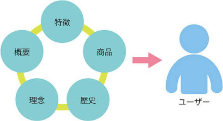
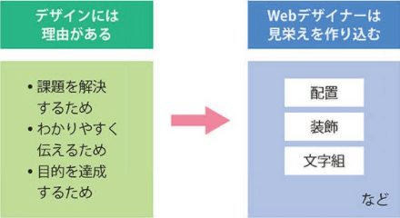

なぜデザインが必要なのか
課題を見つけて、解決するため
例えば「来客を増やしたい」という飲食店の要望があったとします。現状はなぜ来客が少ないのか。どのように施策をすれば来客が増えるかを考えることがデザインという仕事の第一歩です。問題を見極め、予算にあった提案をして、広告や看板、Webサイトなどのツールを使って要望に応えます。おいしい食事を提供するのが飲食店の仕事なら、それを多くの人に知ってもらうのがデザイナーの仕事です。
わかりやすく、伝わりやすくするため
ECサイト「楽天市場」の商品ページでは、縦長の構成で文章や画像が多く「限定商品!」といった直接的なコピーが何度も登場してくるようなレイアウトをよく見かけます。見栄えが美しいデザインとはいえないかもしれませんが、よく商品が売れる画面構成であり、クライアントの要望や目的に合致した正しいデザインです。

課題を見つけて、解決するため
例えば「来客を増やしたい」という飲食店の要望があったとします。現状はなぜ来客が少ないのか。どのように施策をすれば来客が増えるかを考えることがデザインという仕事の第一歩です。問題を見極め、予算にあった提案をして、広告や看板、Webサイトなどのツールを使って要望に応えます。おいしい食事を提供するのが飲食店の仕事なら、それを多くの人に知ってもらうのがデザイナーの仕事です。
何となくデザインしない
Webサイトでいえば、何となくナビゲーション、見出し、フッターを配置する、というデザインの作り方はよくありません。デザインには理由があるべきです。なぜ、このような見栄えになっているのかを説明できないと、誰に対してのデザインなのかわからない全く根拠のない見栄えになってしまいます。目的があり、用途があっての見栄え、という関連性が必要になってきます。
